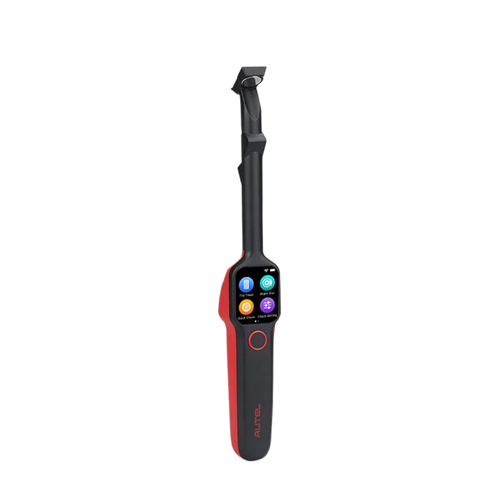
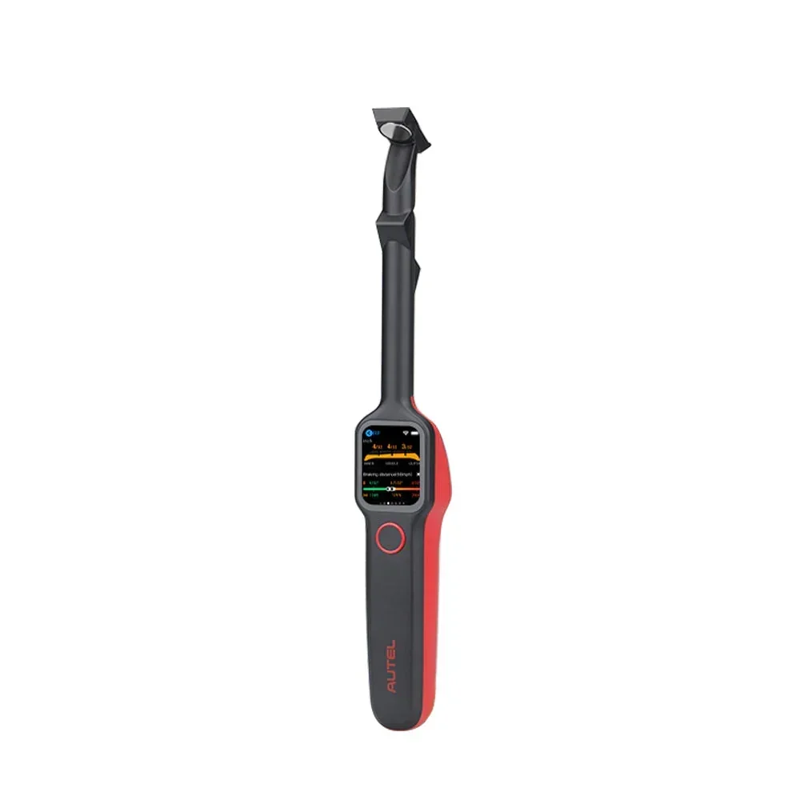
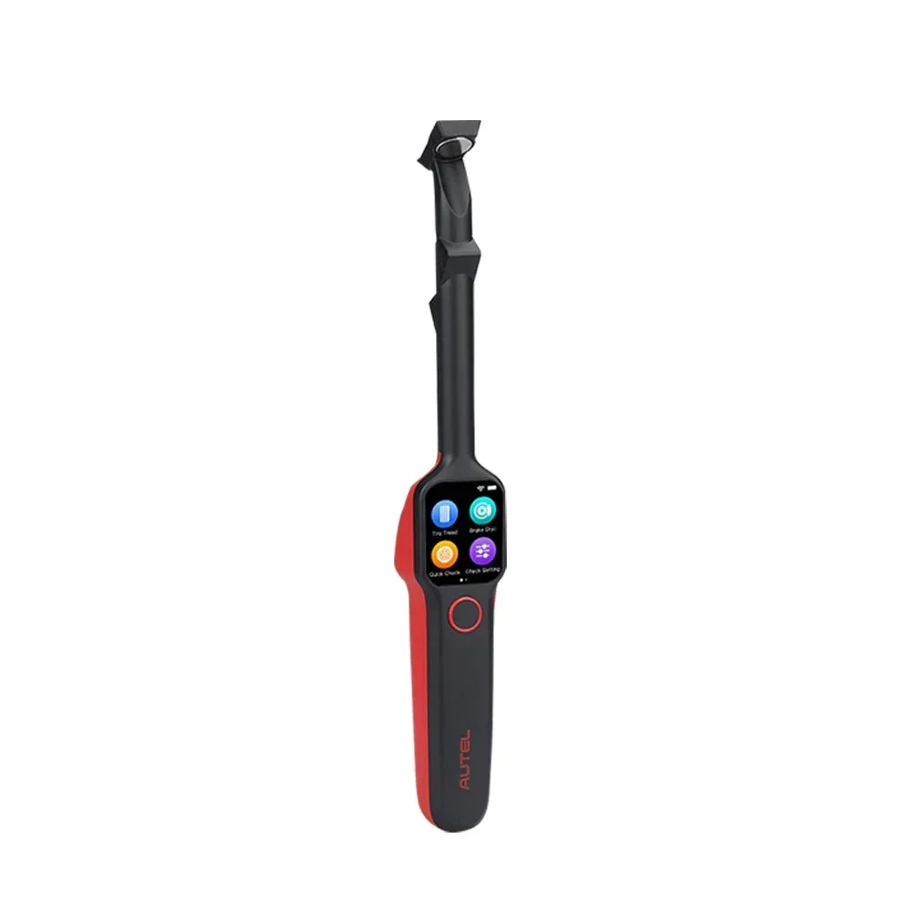
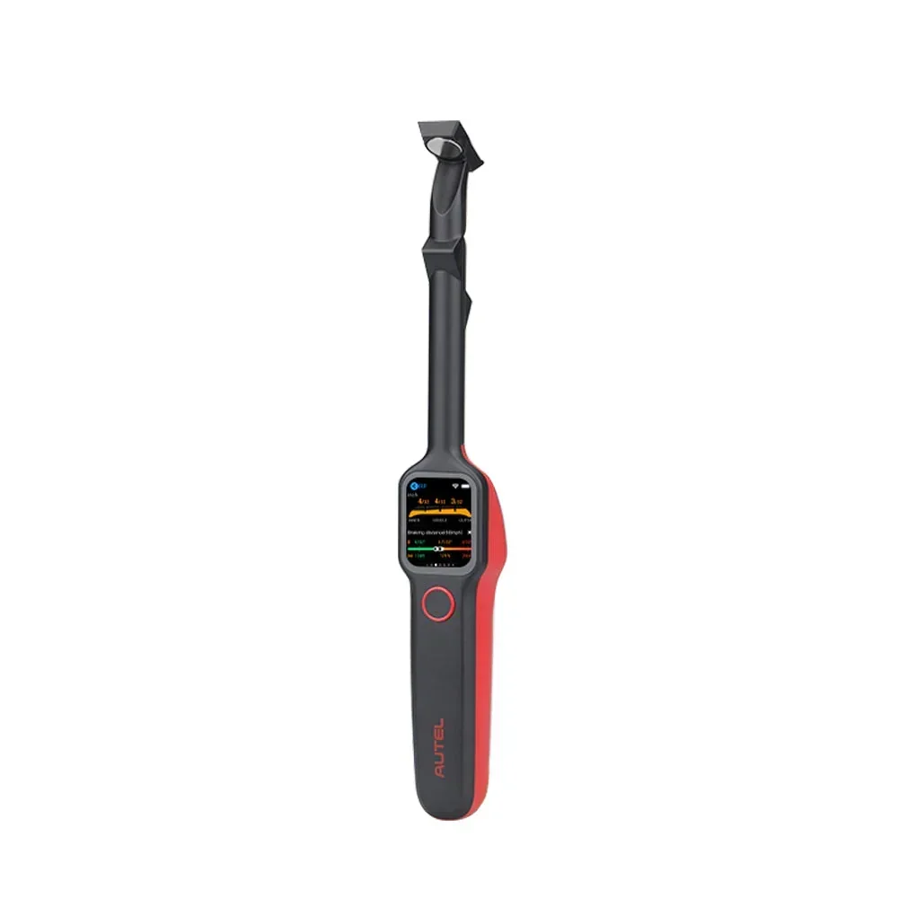

Autel MaxiTPMS TBE200E Testeur de profondeur de sculpture des pneus et d'usure des disques de frein ITS600
L'Autel MaxiTPMS TBE200E est l'outil idéal pour maintenir les performances optimales de votre véhicule. Cet appareil polyvalent d'analyse de la profondeur de la bande de roulement et des disques de frein s'intègre parfaitement à l'ITS600 pour fournir des mesures précises et des données pertinentes, vous permettant ainsi de prendre des décisions éclairées concernant l'état de votre voiture.
Mesure précise de la profondeur de la bande de roulement : Le TBE200E utilise une technologie avancée pour mesurer avec précision la profondeur de la bande de roulement, vous aidant ainsi à identifier les pneus usés avant qu'ils ne représentent un danger pour la sécurité.
- Obtenez des mesures précises pour tous les types de pneus, garantissant une adhérence et une tenue de route optimales.
Analyse de l'usure des disques de frein : Cet outil innovant va au-delà de la simple inspection des pneus en analysant l'usure des disques de frein avec une précision remarquable. Le TBE200E vous aide à déterminer l'état de vos disques de frein, permettant ainsi un entretien régulier et la prévention d'éventuels problèmes ultérieurs.
- Obtenez des informations précieuses sur l'épaisseur des plaquettes de frein et l'état général des disques.
Prenez les bonnes décisions pour assurer le bon fonctionnement de votre véhicule. L'Autel MaxiTPMS TBE200E est un outil indispensable pour les conducteurs qui privilégient la sécurité et la performance.
L'Autel MaxiTPMS TBE200E est un outil puissant conçu pour vous aider à évaluer avec précision l'état de vos pneus et de vos disques de frein. Il offre une gamme de fonctionnalités pour garantir une inspection complète du véhicule, vous permettant de prendre des décisions éclairées concernant l'entretien.
- Mesure de la profondeur de la bande de roulement des pneus : Mesurez avec précision et facilité la profondeur de la bande de roulement de vos pneus, garantissant une adhérence et une sécurité optimales sur la route.
- Examen de l'usure des disques de frein :
- Mesurez l'épaisseur des disques de frein pour une évaluation précise de l'usure.
- Identifiez les disques usés ou endommagés qui nécessitent un remplacement.
- Compatibilité ITS600 : Intégration parfaite avec le système de diagnostic ITS600 pour des fonctionnalités et une analyse des données améliorées.
Cet examinateur complet de pneus et de disques de frein possède une gamme de spécifications conçues pour des performances précises et efficaces :
- Affichage : Écran lumineux et clair pour une lecture facile des mesures et des résultats.
- Dimensions : Conception compacte et légère pour une utilisation pratique Portabilité.
Le système Autel MaxiTPMS TBE200E offre de nombreux avantages pour optimiser l'entretien de votre véhicule :
- Sécurité accrue : Assurez une profondeur de sculpture optimale des pneus et un état impeccable des disques de frein pour une conduite en toute sécurité.
- Entretien proactif :
- Identifiez les problèmes potentiels avant qu'ils ne s'aggravent.
- Prolongez la durée de vie de vos pneus et de vos freins.
- Économies :
- Évitez les réparations coûteuses en effectuant l'entretien rapidement.
- Prenez des décisions éclairées concernant le remplacement de vos pneus et de vos freins.
Le système Autel MaxiTPMS TBE200E est convivial et facile à utiliser :
- Allumez l'appareil et sélectionnez le mode de mesure souhaité (profondeur de sculpture des pneus). (profondeur ou usure du disque de frein).
- Positionnez fermement la sonde contre la bande de roulement du pneu ou le disque de frein.
- Lisez les mesures affichées et interprétez les résultats conformément aux recommandations du fabricant.
Consultez toujours le manuel du propriétaire de votre véhicule pour connaître les consignes d'entretien spécifiques.